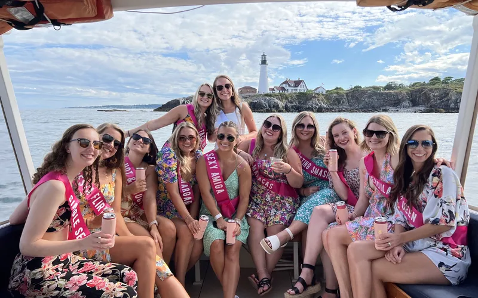

01
Most Popular — Don't Miss
Private Boat Cruise on Casco Bay
The single best bachelorette activity in all of Maine. Board a classic wooden vessel with your entire crew and spend the afternoon or evening sailing the 200+ islands of Casco Bay. Fully private — no strangers, no schedule you didn't set. Choose from four experiences: mimosa brunch, sunset charter, lighthouse sightseeing, or fall foliage cruise. Add catering from Chaval and The Ugly Duckling to any of them.
Groups: Up to 16 guests | Duration: 2–4 hours
See the Boat Cruise